In summary , this chapter has three major parts , The first past , section 4.1 and 4.2 cover the network layer function and services. The second part , section 4.3 and 4.4 covers forwarding , finally , the third past , section 4.5 through 4.7 covers routing.
4.1 Introduction
The first past is used to introduce network layer function and services.
4.1.1 Forwarding and Routing
Forwarding : When the packet arrives at router’s input link , the router must move the packet to the appropriate output link. Section 4.3 we will look inside router and examine how a packet is actually forwarded from an input link to output link within a router.
Routing : The network layer must determine the route or path taken by packets as they flow from sender to receiver. The algorithm that calculated these paths are referred to as routing algorithm . We will discuss routing algorithm inside at section 4.5
Forwarding table : A router forwards a packet by examining the value of a field in the arrived packet’s header and use the header value to index into the router’s forwarding table. The value stored in forwarding table entry for indicate the router’s outgoing link interface to which that packet is to be forwarded .
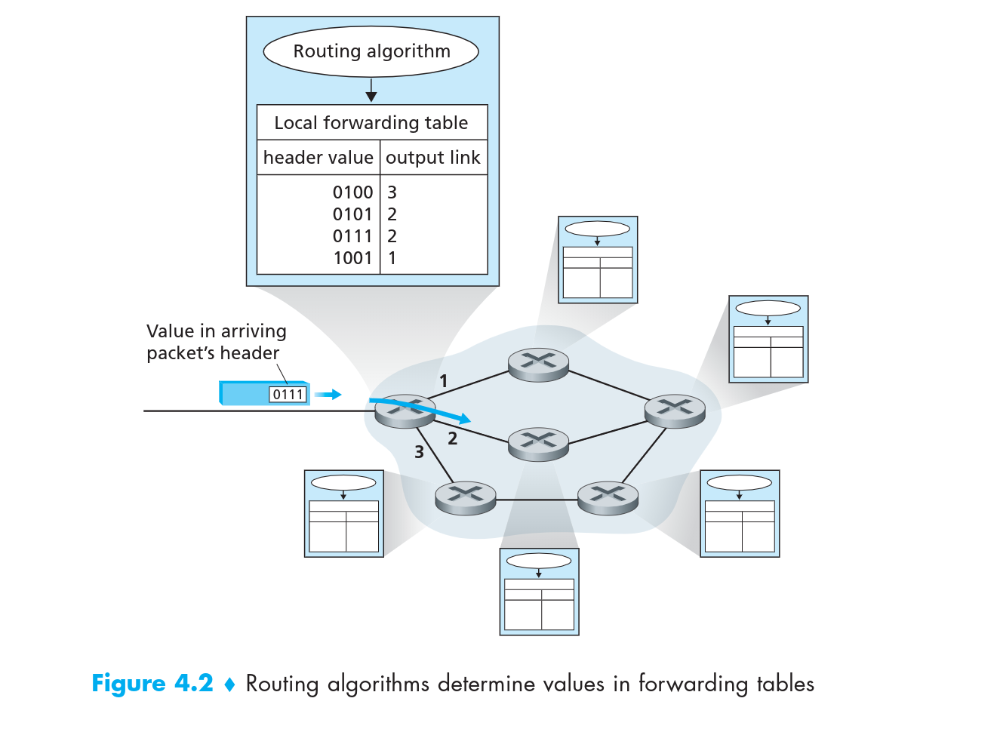
How to configure the forwarding table of all router at the network.
The answer is though the routing algorithm. The router receive the routing protocol message which are used to configure its forwarding table.
Routing algorithm: The routing algorithm has two kinds , one is centralized , another is decentralized.
- centralized : Every router has complete information about all other router in the network and the traffic status of the network. These algorithm is known as LS (link state) algorithm.
- decentralized : Earn router have information about the routers it is directly connected to — it doesn’t know every router in the network. (These algorithm also known as DV (distance vector) algorithm.)
Connection Setup
Addition to the two importance function (forward and routing) , the third importance function is connection setup.
We will examine connection setup in Section 4.2.
4.1.2 Network Service Models
| Questions: |
|---|
| When the transport layer at a sending host transmits a packet into the network layer , can transport layer rely on the network layer to deliver the packet to destination ? |
| When multiple packets is sent , will they be delivered to the transport layer in the receiver’s host in order in which they were sent ? |
| will the amount of time between the send of two sequential packet transmission be same as the amount of time between their reception? |
| will the network provide the feedback about the congestion in the network? |
| what is the abstract view(properties) of the channel connecting the transport layer in the sending and receiving hosts? |
The answer depend on provided network service model.
The specific services that could be provide by network layer include :
| Network Service Models | Description |
|---|---|
| Guaranteed delivery | This service guaranteed that packet will eventually arrive at destination. |
| Guaranteed delivery with bounded delay | This service not only guaranteed delivery of packets , but also delivery within a specified host-to-host delay bounded. |
| In-order packet delivery | This service guaranteed that packet arrived at the destination in the order that they were sent. |
| Guaranteed minimal bandwidth | The network layer service emulates the behavior of transmission a specified bit rate (for example 1Mbps) between sending and receiving host. As long as sending host transmits bits at a rate below the specified bit rate , then no packet lost and packet arrived within a prespecified host-to-host delay.(for example 40 msc). |
| Guaranteed maximum jitter | The service guaranteed that the amount of time between the transmission of two successive packets at the sender is equal to the amount of time between their receipt at destination.(or that this spacing changes by no more than some specified value). |
| Security service | Using a secret session key known by a source and destination host , the network layer in the source host could encrypt the payloads of all datagrams being sent to the destination , the network layer in the destination host would then be responsible for decrypting the payloads. In addition to confidentiality, the network layer could provide data integrity and source authentication services. |
Internet , ATM CBR and ATM ABR service models.
- Internet-Best-effort-service
- Constant bit rate (CBR) ATM network service
- Available bit rate (ABR) ATM network service
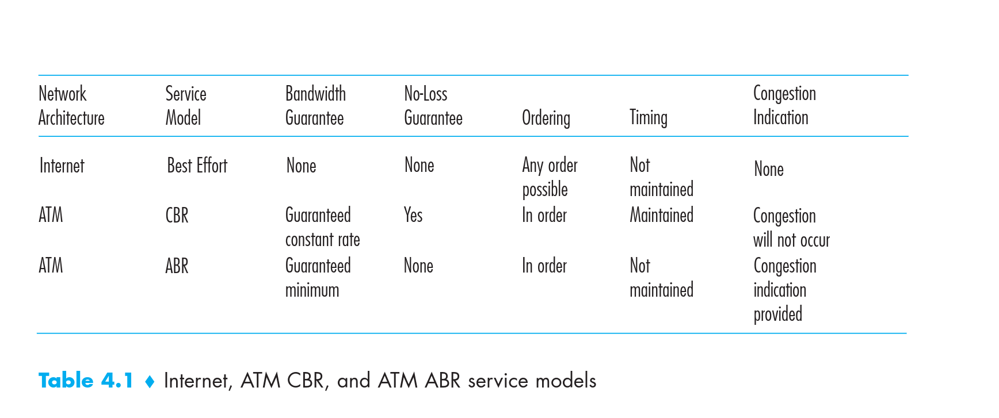
4.2 Virtual Circuit and Datagram Networks
Similar to UDP and TCP , the network layer also provide the connectionless service and connection-oriented service.
In all computer network architectures to data (Internet , ATM , frame relay , and so on ) the network layer provides either a host-to-host connectionless service or a host-to-host connection service , but not both . Computer networks that provide only a connection service at network layer are called Virtual-circuit(VC) networks , computer network that provide only connectionless service at the network layer are called datagram networks.
4.2.1 Virtual-Circuit Networks
A VC consists of :
(1). A path (that is , a series of links and routers) between the source and the destination hosts
(2). VC number one number for each link along the path .
(3). Entries in the forwarding table in each router along the path. A packet belonging to a virtual circuit will carry a VC number in its header. Because a virtual circuit may have a different VC number on each link. Each intervening router must replace the VC number of each traversing packet with a new VC number . The new VC number is obtained from forwarding table.
For example:
suppose The host A request to establish VC connection between itself and host B , We choose the path is A-R1-R2-B , suppose we set 12 , 22 and 32 to these three link. Hence , the value of VC number field is 12 when the packet leave host A , the value of VC number field is 22 when the packet leave R1 , the value of VC number field is 32 when the packet leave R2 .
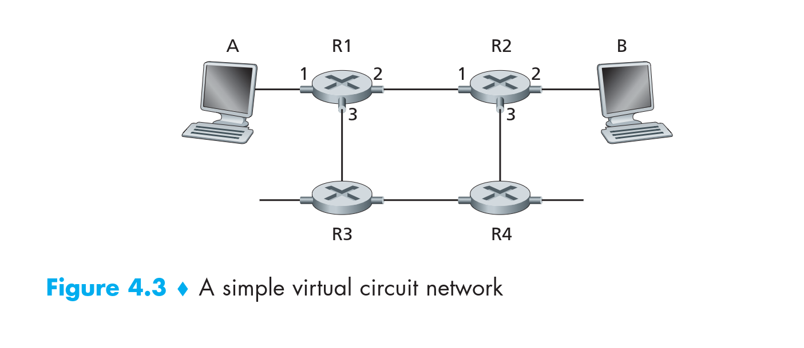
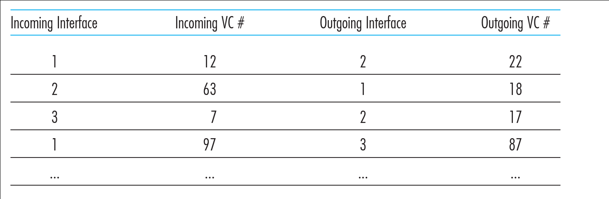
Whenever a new VC is established across a router , an entry is added to the forwarding table . Similarly , whenever a VC terminates , the appropriate entry in each table along its path are removed. — In a VC network , the network router must maintain connection state information for each ongoing connection
Three identifiable phases in a virtual-circuit network.
- VC setup: The network layer determines the path between sender and receiver , that is the series of link and routers through which all packets of VC will travel. The network layer also determines the VC number for each link along the path. Finally , the network layer add the entry to forwarding table in each router along the path. During the VC setup , the network layer may also reserve resource (for example : bandwidth) along the path of VC.
- Data transfer : The VC connection have been established , packets can being flow along the VC.
- VC teardown: This is initiated when the sender (or receiver) informs the network layer of its desire to terminate the VC connection , The network layer will typically inform the end system on the other side of the network of call termination and update the forwarding tables in each of packet routers on the path to indicate that the VC no long exist.
Signaling Message and Signaling Protocol
- Signaling Message: The message that the end systems send into the network to initiate or terminate a VC , the message passed between the routers to setup the VC (that is to modify connection state in router table ).
- Signaling Protocol : The protocol used to exchange signaling message are often referred to as signaling protocol.
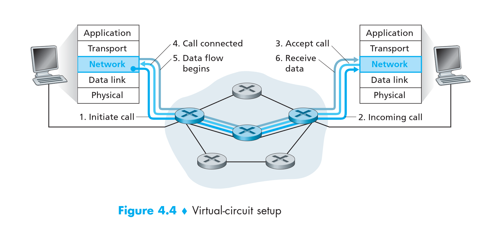
More detail about the signaling protocol and signaling message see [Black 1997] for a general discussion of signaling in connection-oriented networksand [ITU-T Q.2931 1995] for the specification of ATM’s Q.2931 signaling protocol.
4.2.2 Datagram Networks
In the datagram networks , each time and end system want to send a packet , it stamps the packet with the address of the destination end system and then pop the packet into the network . As shown in figure follow , these is no VC setup and routers do not maintain any VC state information (because there are no VCs)
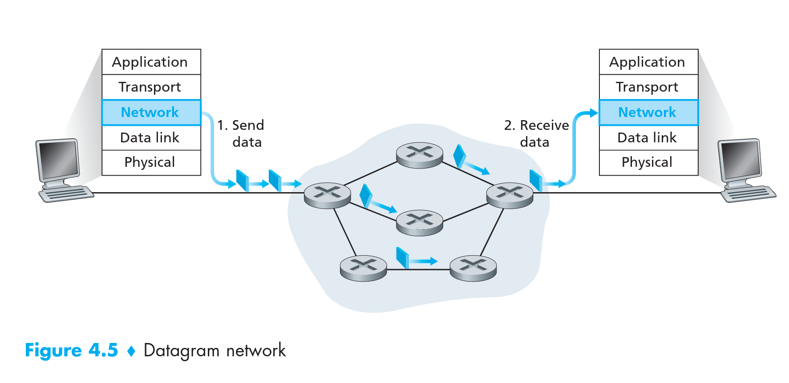
As a packet is transmitted from source to destination , it passes through a series of routers , Each of these router use the packet’s destination address to forward the packet , Specifically , each router these of router has a forwarding table map the destination address to link interfaces , When a packet arrived at the router , the router use the packet’s destination address to look up appropriate link interface in the forwarding table , the router then intentionally forwards the packet to the output link interface.
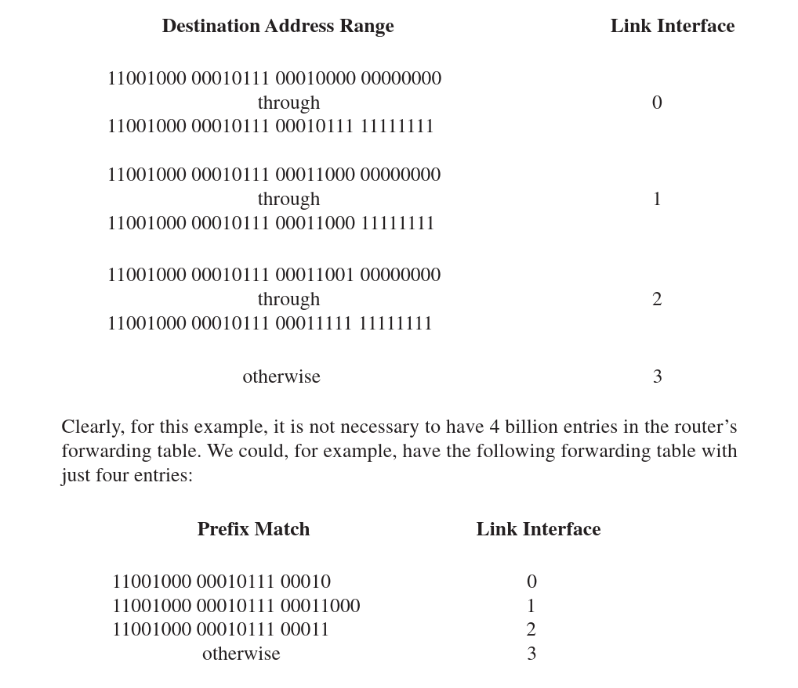
When these are multiple matches , the router uses the longest prefix matching rule that is finding the longest matching entry in the forwarding table , and then forwards the packet to link interface associated with the longest prefix match.
The time scale at which this forward state information (forward table entry) change is relatively slow. Indeed in a datagram network the forwarding table are modified by routing algorithm. which typically update a forwarding table every one-to-five minutes or so.
4.3 What’s Inside a Router?
A high-level view of a generic router architecture is shown in figure follow . Four router components can be identified :
- Input port : An input port perform several key functions .
- It performs the physical layer function of terminating an incoming physical link at router. (Occurring in leftmost box of input port
and rightmost box of output port.) - It performs the link-layer functions needed to interoperate
with the link layer at other side of incoming link . (Occurring in middle box in the input and output ports) - It perform the lookup functions that is the forwarding table is consulted to determine the router output port to which an arriving packet will be forwarded via the switching fabric. (Occurring in the rightmost box of input port)
- It performs the physical layer function of terminating an incoming physical link at router. (Occurring in leftmost box of input port
- Switching Fabric : The switching fabric connects the router’s input port to its output port.
- Output port: An output port store the packet from switching fabric and transmits these packets on outgoing link by performing the necessary link-layer and physical-layer functions.
- Routing Processor : The routing processor executes the routing protocol (study in section 4.6) maintain routing table and attached link state information and computer the forwarding table for the router .It also perform the network management (study in chapter 9).
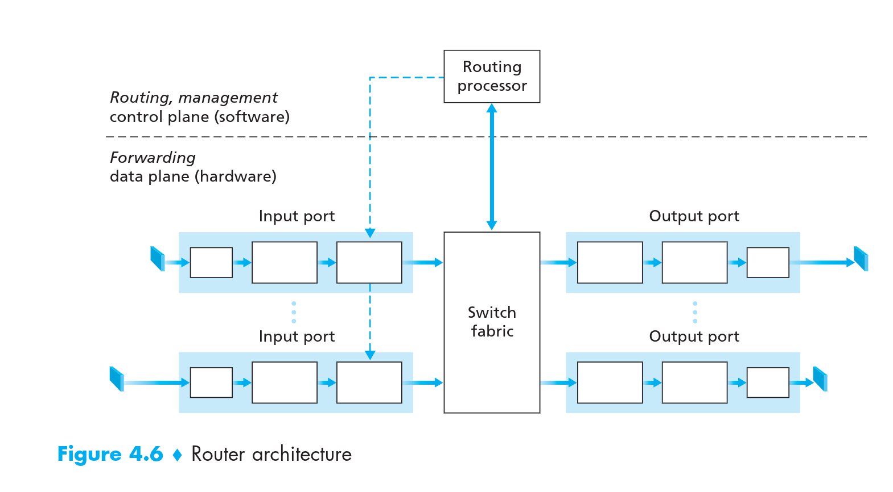
A router input port , output port and switch fabric together implement the forwarding function and almost always implemented in the hardware.
4.3.1 Input Processing
The lookup performed in the input port is central to the router’s operation — it is here that the router uses the forwarding table to lookup the output port to which an arrived packet will be forwarded via switching fabric , the forwarding table is computed and updated by the router processor. The forwarding table is copied from the routing processor to the line cards over separate bus (eg: PCI bus). With the forwarding table copies , forwarding decision can be made locally , at each input port , without invoking the centralized routing processor. Once a packet’s output port have been determined via the lookup , the packet can be sent into the switching fabric.
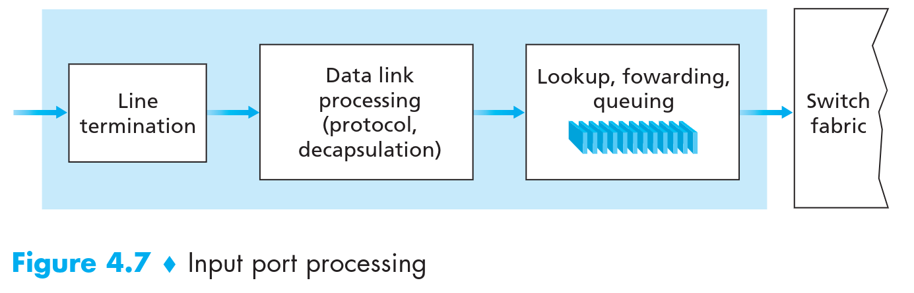
Although lookup is arguably the most importance action in input port processing many other action must be taken :
- Physical and link layer processing must be occur as discussed above;
- The packet’s version number , checksum and time-to-live-field (We will study in section 4.4.1)
- counter used to network management (such as the number of IP datagram received) must be updated.
4.3.2 Switching
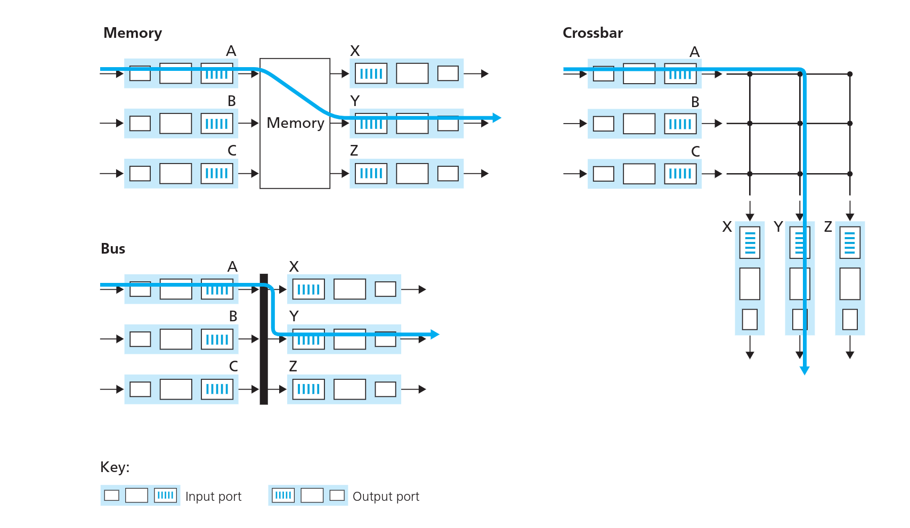
Switching can be accomplished in a number of way , as shown in figure above.
Switching via memory : The simplest , earliest routers were traditional computers with switching between the input ports and output ports being done direct control of the CPU (routing process). Input port and output ports functioned as traditional I/O devices in traditional operating system. An input ports with an arriving packet signaled the routing process via an interrupt , The packet was then copied from input port to processor memory. The routing process was then extracted the destination address from the header , look up the appropriate outpost in the forwarding table , and copied the packet to the output post’s buffer.
Note that two packet can not be forwarded at the same time even if they has different destination ports. So that packets transferring speed is very slow. Many modern routers switch via memory. A major difference from early routers,however, is that the lookup of the destination address and the storing of the packet into the appropriate memory location are performed by processing on the input line cards.Switching via bus: In this approach , an input port transfers packet directly to output port without intervention by the routing process. This is typically done by having the input port pre-pend a switching internal label (header) to the packet indicating the local output port to which this packet is being transferred and transmitting the packet onto the bus. The packet is received by all output posts , but only the port that matches the label will keep this packet. The label is then removed at the outpost port. If multiple packets arrive to the router at the same , each at a different input ports , all but one must wait since only one packet can cross the bus at a time .(The roundabout could only contain one car at a time)
Switching via an interconnection network: A crossbar switch is an interconnection network consisting of 2N buses that connect N input ports and N output ports . Each vertical bus intersects intersects each horizontal bus at a crosspoint , which can opened and closed at any time by switching fabric controller. When a packet arrives from post A and need to be forwarded to post B , the switch controller closes the crosspoint at intersection of buses A and Y and port A sends the packet onto its bus , which is picked up (only) by bus Y. Note that the packet from B need to be forwarded to post X at the same time , crossbar network are capable of forwarding multiple packet in parallel, However if two different input post destined to same output post , the one have to wait at the input port.
4.3.3 Output processing
Output post processing take packets that have been stored in the output port’s memory and then transmit them over the output link. This include selecting and de-queueing packet for transmission and performing the needed link-layer and physical-layer transmission functions.
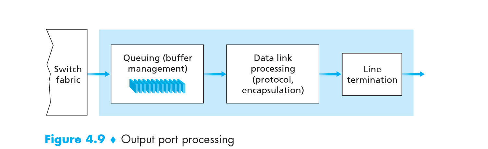
4.3.4 Where Does Queueing Occur ?
It’s clear that packet queue may form at both the input port and the output port.
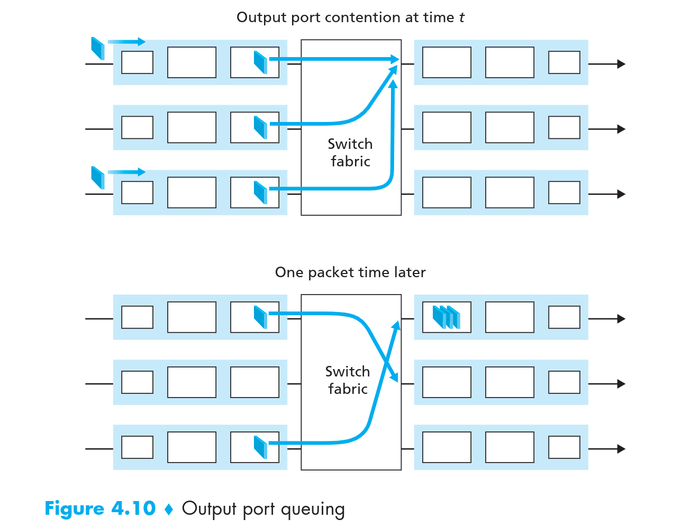
In this scenario ($R{switch}$ fast enough $R{link}$ ), packets arriving at each of N input ports and destined to same the output port. Since the output port can transmit only a single packet in a unit of time(a packet transmission time) . The N arriving packets will have to queue(wait) for transmission over to outgoing link. Eventually if the number of queued packets grow large enough to exhaust available memory at the output port , in which case packet are dropped.
A consequence of output port queueing is that packet scheduler at the output port must choose a packet among those queued for transmission. The selection may be first-come-fist-served (FCFS) , weighted fair queueing (WFQ) which shares the outgoing link fairy among the different end-to-end connections that have packets queued for transmission.
Similarly , if there is not enough memory to buffer an incoming packet , a decision must be made to either drop arriving packet or remove one or more already-queued packets to make room for newly arriving packet.
For example : Active Queue Management (AQM) algorithm and Random Early Detection (RED) algorithm
If $R{switch}$ not fast enough $R{link}$ The switch fabric to transfer all arriving packets though the fabric without delay , then packet queueing can also occur at the input ports that is packets must join input port to wait turn to be transferred though the switching fabric to output port.
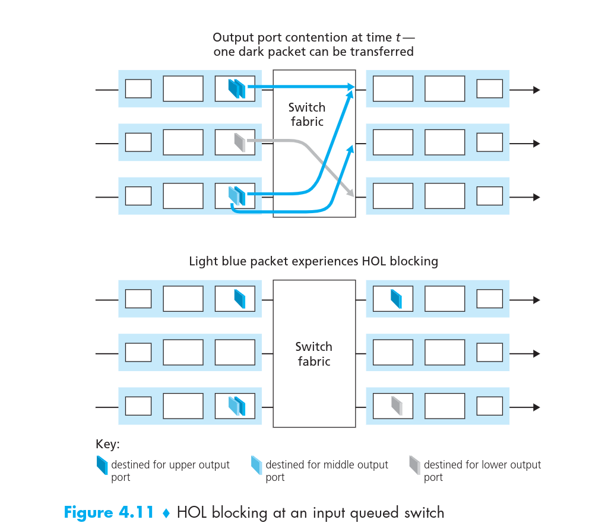
Figure above shown an example , and suppose that
(1).the switching fabric is crossbar switching fabric.
(2).Packets are moved from a given input queue to their desired output queue in an FCFS manner. Two packets (darkly shaded, port 1,3) at the front of their input port queues are destined for the same upper-right output port. Suppose that the switching fabric choose to transfer the packet from the front of the upper-left queue. In this case the packet in lower-left queue must wait , not only darkly shaded must be wait , but also the lightly shaded packet that behind the darkly shaded in the lower-left queue even though it destined for middle-right output port . This phenomenon is knowns as head-of-the-line (HOL) blocking.
4.4 The Internet Protocol (IP) : Forwarding and Addressing in the Internet.
Inside of the Internet’s Network Layer:
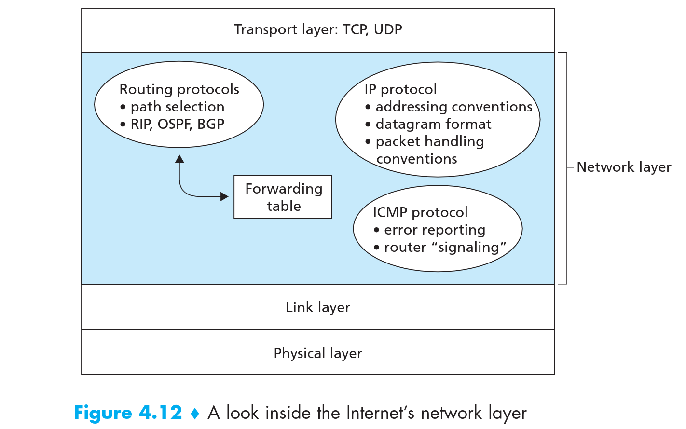
The three major component inside the internet network:
- IP Protocol
- Routing Component (Routing protocol study in section 4.6)
- Report error and in datagram and respond to request for certain network-layer information. Internet Contorl Message Protocol (ICMP) studied in section 4.4.3
4.4.1 Datagram Format
The network-layer packet is referred to as a datagram.
Ipv4-Datagram-Format:
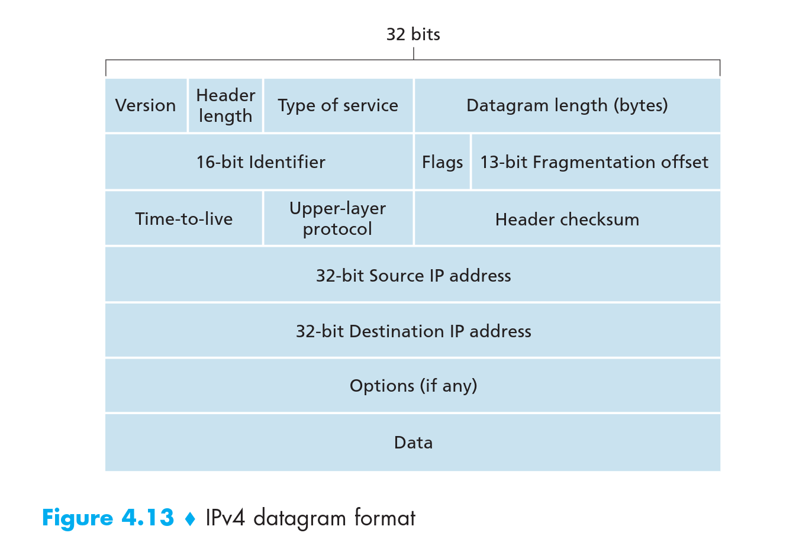
The key field of Datagram format are following:
- Version number : These 4 bits specify the IP protocol version of the datagram , by look at the version number , the router can determine how to interpret the remainder of IP datagram . Different Version of IP use different datagram format.
- Header length: Because the IPv4 datagram contain a variable number of options (which are included in the IPv4 datagram header) This 4 bits is needed to determine where the data actually being in the datagram . Most Ipv4 datagram don’t contain option , so the typical IP datagram has a 20 bytes header.
- Type of service: The type of service bits were included in ipv4 header to allow different types of datagram (for example : requiring low delay , hight throughput or reliability).
- Datagram length: This is a total length of the IP datagram (Header Plus Data) , since this field is 16 bits , so that the maximum size of the IP datagram is 65535 bytes, however datagram rarely larger than 1500 bytes.
- Identifier , flags , fragmentation offset: These three field we will consider depth in shortly.
- Time-to-live: The field used to ensure that datagram don’t circulate forever in the network.
- Protocol : The value of this field is used to indicates the specific transport-layer-protocol to which the data portion of this datagram should be passed , for example the value 6 represent TCP and the value 17 represent UDP.
- Header Checksum : The header checksum aids a router detecting bit error in a received IP datagram.
Why does TCP/IP perform error checking at both the transport and network layer.- only the IP header is checksummed at the IP layer while the TCP/UDP checksum is computed over the entire TCP/UDP segment.
- TCP/UDP and IP do not necessarily both have to belong to the same protocol stack. IP also can service other protocol (different to TCP/UDP).
- Source and Destination IP Addresses
- Options : The options flied allow an IP header to be extended.
- Data field (payload): In most circumstance , the data field of the IP datagram contains the transport-layer segment (for example UDP/TCP) . However , the data field can carry other types of data such as ICMP message .
IP datagram fragmentation
Since not all link-layer protocol can carry network-layer protocol of the same size . Some protocol can carry big datagrams , whereas other protocols can only a little packets. (for example : Ethernet frames carry 1500 bytes of data, the wide-area links can no more than 576 bytes.)
Because each IP datagram is encapsulated within the link-layer frame for transport from one router to next router. The problem is that each of link along the router between sender and destination can use different link-layer protocols and each of those protocol can have different MTUs(maximum transmission unit).
Suppose the router have MTU that is smaller than the length of the IP datagram . How to squeeze this oversize IP datagram into the payload field of the link-layer frame?
The solution is to fragment the data in the IP datagram into two or more smaller IP datagrams , encapsulate each of these smaller IP datagram in a separate link-layer frame and send these frames over the outgoing link . Each of these smaller datagram is referred to as a fragment.
Fragment need to reassembled before they reached the transport layer at the destination . Indeed both TCP and UDP expecting to complete, unfragmented segment from the network layer.
How to determine a packet whether or not a fragment , how to reassemble these fragment and when the destination host have received the last fragment of some original larger datagram.
The answer is three field in the ipv4 datagram header.
- 16-bits-identifier field: When a datagram is created , the sending host stamps the datagram with an identification number as well as source and destination address. Typically , the sending host increments the identification number of each datagram it sends.
13-bits Fragmentation offset: When a router need to fragment a datagram , each resulting fragment is stamped with the source and destination address , and identification number of original datagram , and then the Fragmentation offset field is used to specify where the fragment fit within the original IP datagram.(unit is bit)
Flags field: This field is used to identify the last fragment of Original Ipv4 datagram . The last fragment has a flags bit set to 0 , and other fragment has a flags bit set to 1.
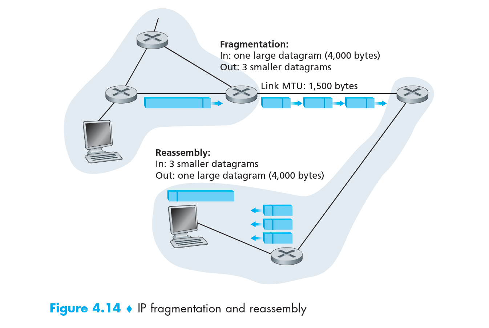
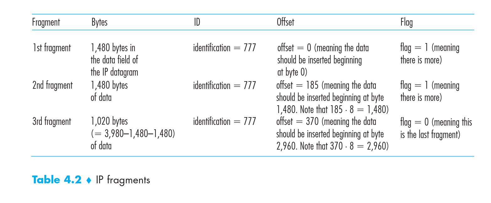
If one or more fragment does not arrive , the incomplete fragments is discarded and not passed to transport layer , and The transport layer protocol is TCP , TCP will recover this loss by retransmission.
4.4.2 IPv4 Addressing
- Interface : The boundary between the host and physical link is called an interface.
A router has multiple interfaces and each of these interfaces have its own unique IP address.
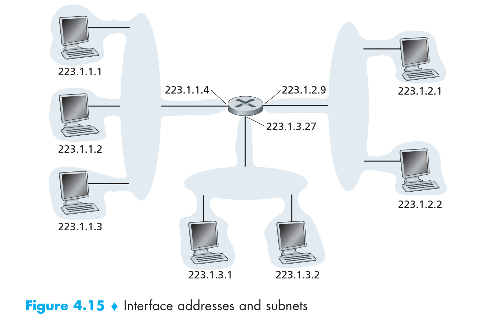
- Subnet: To determine the subnet detach each interface from its host and router , creating islands of isolated networks with interfaces terminating the end points of isolated networks , Each of these isolated networks is called a subnet.
Shown as figure above , In the upper-left , this network interconnecting three host interfaces and one router interface forms a subnet. IP addressing assigns an address to this subnet : 223.1.1.0/24 , where the /24 notation , sometime known as subnet mask, Indicate that the leftmost 24-bits of 32-bits quantity define the subnet address.
The internet’s addressing assignment strategy is known as Classless Interdomain Routing (CIDR) As with subnet addressing , the 32-bits IP address is divided into two parts and again has the dotted-decimal form a.b.c.d/x , where x indicates the number of bits in the first past of the address (network prefix) . When we cover the internet BGP routing protocol in the section 4.6 , we will see that only these leading x prefix bits are considered by routers the organization’s network. That is when a router outside the organization forwards a datagram whose destination address is inside the organization only these leading x bits of the address need be considered . The remaining $32-x$ bits of an address can be though of as distinguishing among the devices within the organization. These bits will be considered when forwarding packets at routers within the organization.
The special IP address : 255.255.255.255 (IP broadcast address), when a host send a datagram with destination address 255.255.255.255, this message is delivered to all host on the same subnet.
Obtaining a Block of Address
Internet corporation for Assigned Name and Number (ICANN) has responsibility for managing the IP address space and allocating address blocks to ISPs and other organizations.
In order to obtain a block of IP addresses for use within an organization’s subnet , a network administrator might first contract its ISP , while would provide addresses from a larger block of addresses that had already been allocated to the ISP. For example , the ISP may itself have been allocated the address block 200.23.16.0/20 ,the ISP divide its address block into eight equal-sized contiguous address block and give one of these address block out to each of up to eight organizations.
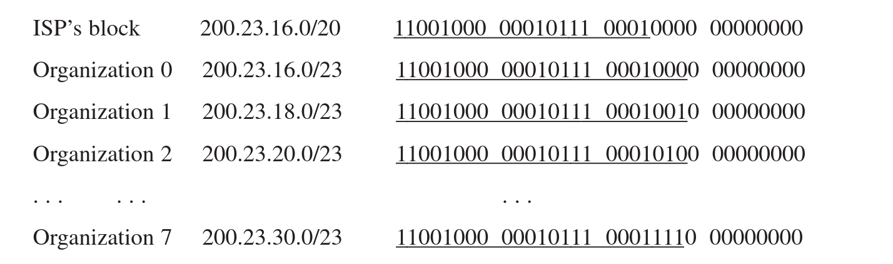
Obtaining a host Address : The Dynamic Host Configuration Protocol
Once an organization obtained a block of addresses it can assign individual IP address to host and router interface in its organization.
The router IP address typically manually configure by a system administrator. The host IP address typically configure by using Dynamic Host Configuration Protocol (DHCP) DHCP allows a host obtain an IP address automatically. As the host join and leave , the DHCP server need to update its list of available IP addresses.
DHCP is a client-service protocol . A client is typically a newly arriving host wanting to obtain network configuration informations. Each subnet have a DHCP service . If no server is present on the subnet , a DHCP relay agent (typically a router) that knows the address of a DHCP service for that network is needed , for example show as figure below , DHCP service attached to subnet 223.1.2/24 , with the router serving as relay agent for arriving clients attached to subnet 223.1.1/24 and 223.1.3/24 .
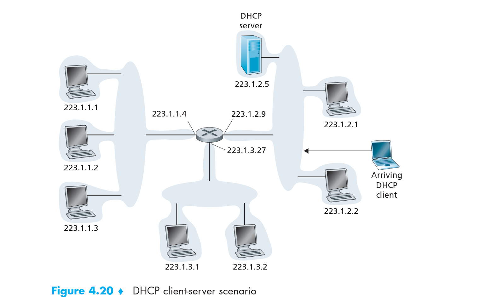
When a newly arriving host income to subnet , The DHCP has four steps for assign a IP address to new host.
DHCP server discovery: This is done using DHCP discovery message The new host send a DHCP discovery message with a UDP packet , port 67 source IP address : 0.0.0.0 (since , new host hasn’t IP address) and destination IP address : 255.255.255.255 (broadcast address). The UDP packet is encapsulated in a IP datagram and then passed to the link-layer. (We will cover the detail of broadcast in section 5.4)
DHCP server offer(s) : A DHCP server receiving a DHCP discovery message responds to the client with the DHCP offset message that is broadcast to all notes on the subnet using the broadcast IP address : 255.255.255.255. Each server offer message contain the transaction ID of the receiver discovery message , the proposed IP address for the client , the network mask , and an IP address lease time .
DHCP request : The newly arriving client will choose from among one or more server offers and respond to its selected offer with DHCP request message echoing back the configuration parameters.
DHCP ACK: The server responds to the DHCP request message with a DHCP ACK message confirming the requested parameters.
yiaddr(as in “your Internet address”)
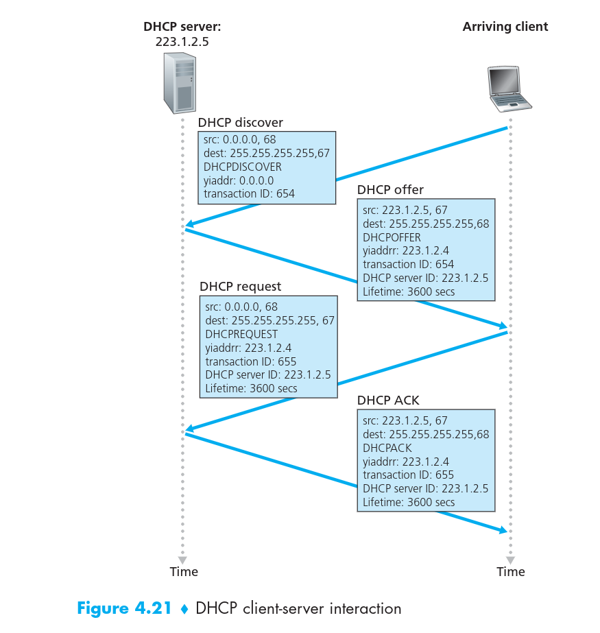
Once the clients receives the DHCP ACK , the interaction is compelte and client can use the DHCP-allocated IP address for the lease duration. Since a client may want to use its address beyond the lease’s expiration , DHCP also provide a mechanism that allow a client to renew its lease on an IP address.
Network Address Translation (NAT)
With proliferation of small office , home office (for example , the kid at home not only their computer but have one or more smartphone and networked game ..etc) , the ISP have not enough IP address to handle this scenarios , what should we do in this scenarios.
The answer is NAT (Network Address Translation)
Figure follow is show the operation of NAT-enabled router.
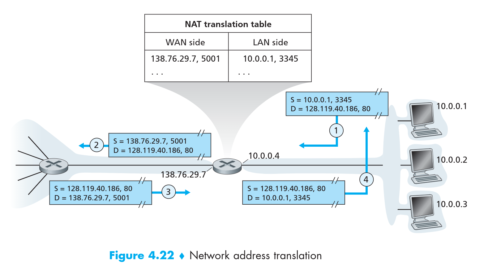
In figure above all traffic leaving the home router for for the larger internet has a source IP address of 138.76.29.7 and all traffic entering the home router must have a destination IP address 138.76.29.7. In essence the NAT-enabled router is hiding the detail of the home network from the outside world.
Question: How the home network computer (or other network device) get their home IP address (for example 10.0.0.0/24)?
The answer is DHCP , The router get its IP address from the ISP’s DHCP server and the router runs a DHCP server to provide addresses to computer (or other device ) within the NAT-DHCP-router-controlled-home-network’s-address-space.Question : If all datagram arriving at the NAT-Router from the WAN have the same destination IP address , how does the router know the internal host which it should forward a given datagram.
The trick is use a NAT translation table at the NAT router , and to include port number as well as IP addresses in table entries. For example shown as figure above , the host computer 10.0.0.1 request a web page on some web server (port 80) with IP address 128.119.40.186 . The host 10.0.0.1 assigns the (arbitrary) source port number 3345 and send the datagram into the LAN , The NAT-Router receives the datagram , genarates a new source port number 5001 , replace the source IP address with it WAN-side IP address 138.76.29.7 and replace the original source number 3345 with its new source port number 5001. NAT-Router adds an new entry to its NAT translation table and send a new datagram to WAN , when a datagram arriving at the NAT-Router , the NAT-Router use the destination IP address and destination port to obtain appropriate IP address (10.0.0.1) and destination port (3345) , then send a datagram to home network.
UPnP
The detail we can see the textbook page 352.
4.4.3 Internet Control Message Protocol (ICMP)
ICMP protocol is used by hosts and router communicate network-layer informations to each other. The most typical use of ICMP is error reporting.
The ICMP message is carried inside the IP datagrams , that is ICMP messages are carried as IP payload.
ICMP message have a type field and a code field and checksum field.
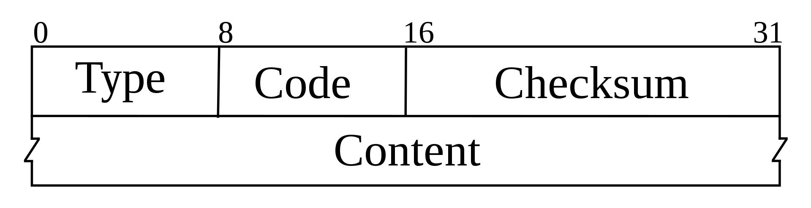
The ICMP control message :
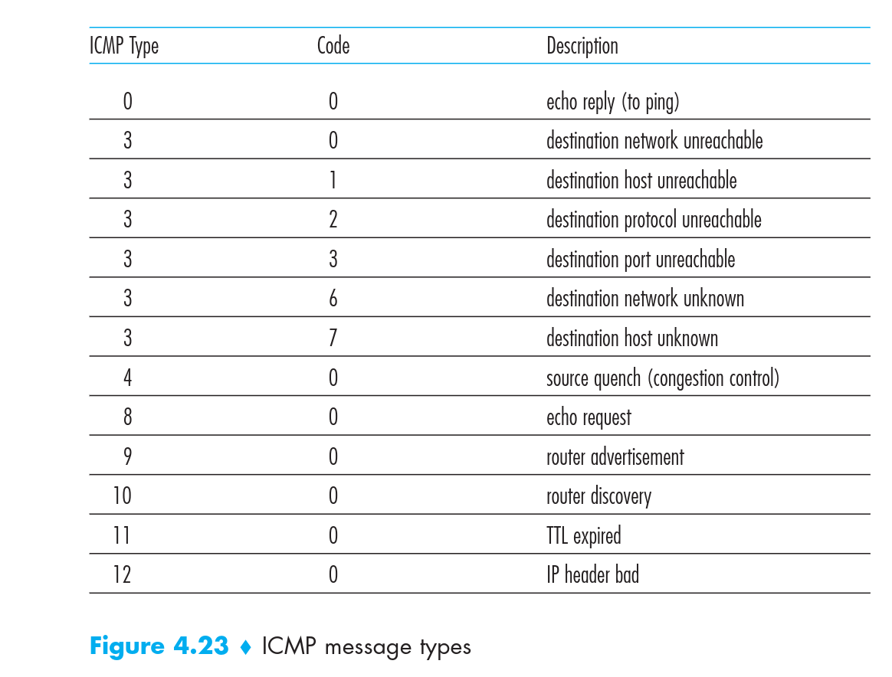
4.4.4 IPv6
IPv6 Datagram Format
Most importance changes introduced in IPv6 :
Expanded addressing capabilities : IPv6 increases the size of the IP address from 32 bits to 128 bits . This ensure that the world won’t run out of IP address. In addition to unicast and multicast address , IPv6 introduced a new type of address called anycast address
A streamlined 40-byte header : A number of IPv4 fields have been dropped or made optional , The resulting 40-bytes-fixed-length header allows for faster processing of the IP datagram . A new encoding of option allow for more flexible option processing.
Flow labeling and priority : The IPv6 header also has an 8-bits traffic class field. This field can be used to give priority to certain datagram within a flow or it can be used to give priority to datagram from certain application (for example ICMP) over datagram from other applications (for example : network new).
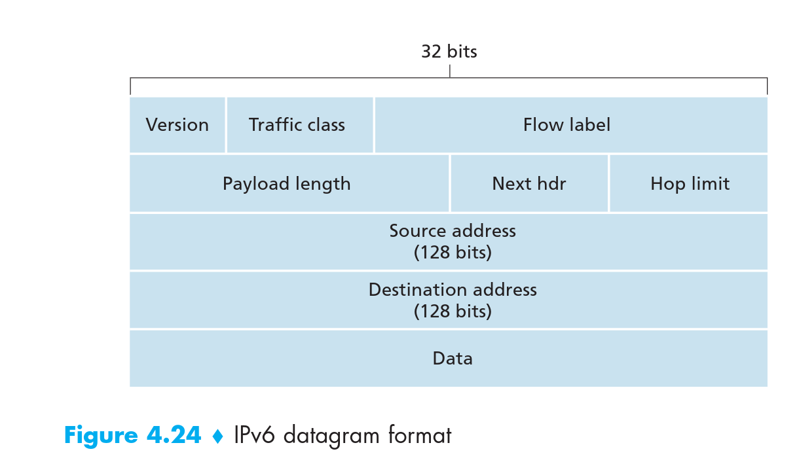
The following fields defined in IPv6:
- Version : This 4-bits field identifies the IP version number.
- Traffic class : This 8-bits field is similar in spirit to the TOS (Type of service) field we saw in IPv4.
- Flow label : This 20-bits is used to identify a flow of datagrams.
- Payload length : This 16-bits is treated as an unsigned integer giving the number of bytes in the IPv6 datagram following the fix-length 40-byte datagram header.
- Next header : This field is used identifies the protocol to which the content of this datagram will be delivered. This field uses the same values as the protocol field in the IPv4 field.
- Hop limit : The content of this field are decremented by one by each router that forward the datagram . If the hop limit count reaches zero , the datagram is discarded.
- Source and destination address : 128-bits IP address.
- Data : This is the payload portion of the IPv6 datagram.
The several fields appearing in the IPv4 datagram are no longer present in the IPv6 datagram.
- Fragmentation/Reassembly : IPv6 do not allow for fragmentation and reassembly at intermediate . These operations performed only by the source and destination . If an IPv6 datagram received by a router is too large to be forwarded over the outgoing link , the router simply drops the datagram and sends “a packet too big” ICMP error message back to the sender , the sender can then resend the packet using a smaller IP datagram size. Fragmentation and reassembly is a time-consuming operation ; removing this functionality from the routers and placing it squarely in the end systems considerably speeds up IP forwarding within the network.
- Header checksum : Because the transport-layer and link-layer protocols in the internet layers perform checksumming , the designers of IP protocol felt that this functionality was sufficiently redundant in the network layer could be removed. The IPv4 header checksum needed to recomputed at every router , As with fragmentation and reassembly , this too was a costly operation in IPv4.
- Options : An options field is no longer a part of the standard IP header. However , it has not gone away . Instead the option field is one of possible next header pointed to from within the IPv6 header . Just as TCP or UDP protocol headers can be the next header within an IP packet .
A new version of ICMP protocol is known as ICMPv6 , that is used to service for IPv6
Transitioning from IPv4 to IPv6
We have two approaches for gradually integrating IPv6 hosts and routers into an IPv4 world (with the long-term goal, of course, of having all Ipv4 node eventually translation to IPv4).
Dual-Stack Approach :
That is IPv6 nodes also have complete IPv4 implementation. That has the ability to send and receive an both IPv4 and IPv6 datagram ; when interoprating with an IPv4 node an IPv6/IPv4 node can use IPv4 datagram , when interopratig with an IPv6 node it can speak IPv6. IPv6 and IPv4 nodes must have both IPv6 and Ipv4 address.
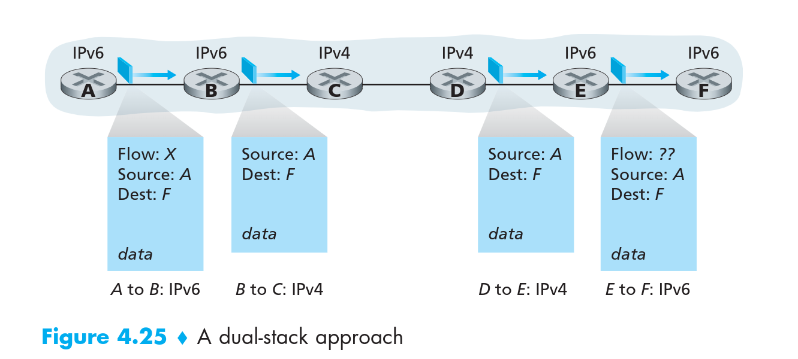
Problem :
As figure above , The node A communicate with node F , and node A send a datagram to node F , when a datagram is sent from node B (IPv6) to node C (IPv4) , The node B must create a new datagram to send to node C , the data field of the IPv6 can be copied into the data field of the IPv4 datagram and appropriate address mapping can be done . However , in performing the conversion from IPv6 to IPv4 , there will be IPv6-specific fields in the datagram (for example the flow identifier field) that have no counterpart in IPv4 , The information in these fields will be lost.
Tunneling (An alternative to the dual-stack approach):
Tunneling can solve the problem note above.
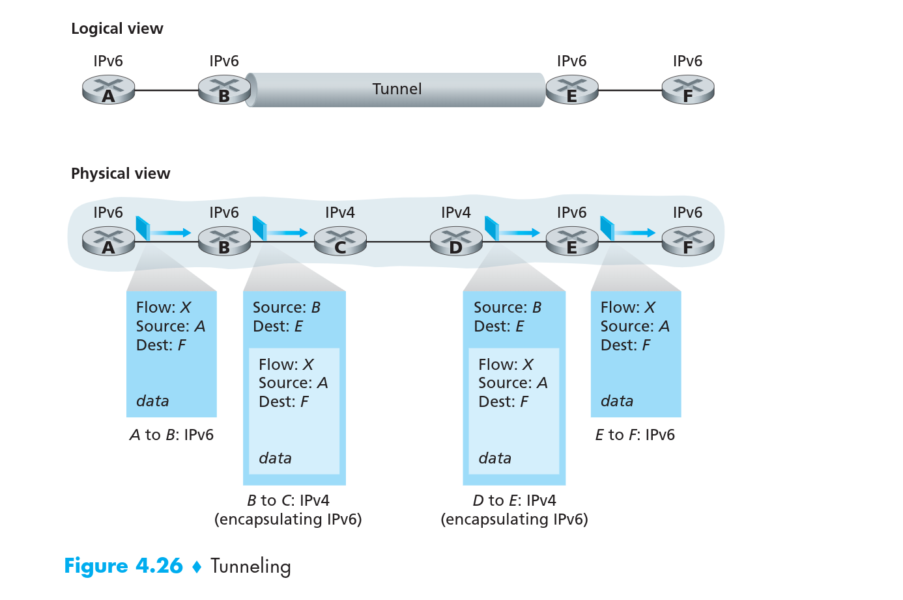
Suppose two IPv6 nodes (for example : B and E in the figure above) want to interoperate using IPv6 datagram but are connected to each other by intervening IPv4 routers. We refer to the intervening set of IPv4 router between two IPv6 router as a tunnel. With tunneling , the IPv6 node on the send side of the tunnel (node B) **takes the entire IPv6 datagram and put it into the data field (payload) of IPv4 datagram.
This IPv4 datagram is then addressed to the IPv6 node on the receiving side of the tunnel (node E) and sent to the first node in the tunnel (node C). The IPv6 node on the receiving side of the tunnel eventually receives the IPv4 datagram (it is a destination of IPv4 datagram!) determine that IPv4 datagram contain an IPv6 datagram , extract the IPv6 datagram and then routes the IPv6 datagram exactly as it would if it had received the IPv6 datagram from a directly connected IPv6 neighbor.
4.4.5 A Brief Foray into IP Security
Using IPsec protocol provide security service . (more detail see the chapter 8).
4.5 Routing Algorithm
Routing Algorithm operating in network routers , exchange and compute the information that is used to configure these forwarding table .
Whether network layer provide datagram service (packet between the source and destination may takes many different routes)or VC service (packet between the source and destination take the same path) , the network layer must determine the path that packets take from sender to receiver.
We will see the job of routing is determine the good paths (least-cost-path) from senders to receivers through the network of routers.
Classify routing algorithm according to whether they are global or decentralized.
- A global routing algorithm : Computes the least-cost path between a source and destination using complete global knowledge about the network.(complete global knowledge is mean all node connectively relationship and link cost in the network). In practice algorithm with global state information are often referred to as Link-state(LS) algorithm.
- A decentralized routing algorithm : The calculation of least-cost path is carried out in an iterative , distributed manner. No node have complete information about the cost of all network link , instead each node begins with only the knowledge of the cost of its own directly attached links. Then through an iterative process of the calculation and exchange of information with its neighboring nodes , a node gradually calculates the least-cost path to destination or set of destinations. The decentralized routing algorithm is called distance-vector (DV) algorithm .
4.5.1 The Link-State (LS) Routing Algorithm
In practice , The Link-State Routing Algorithm is accomplished by having each node broadcast link-state packets to all other nodes in the network , with each link-state packet containing the identifies and cost of it attached links. The result of the note’s broadcast is that all node have an identical and complete view of the network. Each node can then run the LS algorithm and compute the same set of least-cost paths as every other node.
The LS algorithm is known as Dijkstra’s Algorithm name after its inventor. A closely related algorithm is Prim’s Algorithm .
Let us define the following notation:
- D(v) : Cost of the least-cost path from the source to destination v as of this iteration of the algorithm.
- P(v) : Previous node (neighbor of node v) along the current least-cost path from source to node v.
- N’: subset of nodes , if v in N’ represent the least-cost path from source to v have been definitely known.
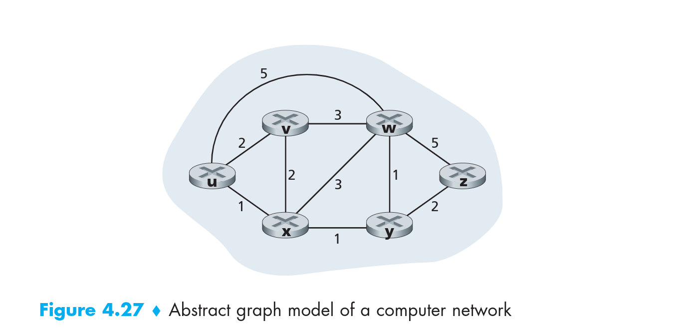
Link-State Algorithm For Source Node u
Initialization :
N' = {u};
for all nodes v
if v is a neighbor of u
then D(v) = c(u,v)
else D(v) = ∞
Loop :
Find w not in N' simultaneously D(w) is a minimum
Add w to N'
Update D(v) for each neighbor v of w and not in N' :
D(v) = min ( D(v) , D(w)+c(w,v) );
Until : N' = N ( N is set of all node )
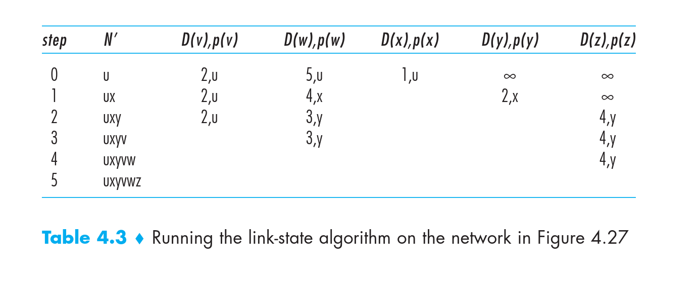
The detail of step can watch the video follow:
Problem of LS algorithm :
Figure follow shown a simple network topology where link costs are equal to the load carried on the link.
In this example , link cost are not symmetric that is the C(u,v) equal to C(v,u) only if the load carried on the both directions on the link(u,v) is same .
In this example , node z originates a unit of traffic destined for node w , node x also originates a unit of traffic destined for node w and node y injects an amount of traffic equal to e also destined for node w .
The order of looking at figure is a->b->c->d
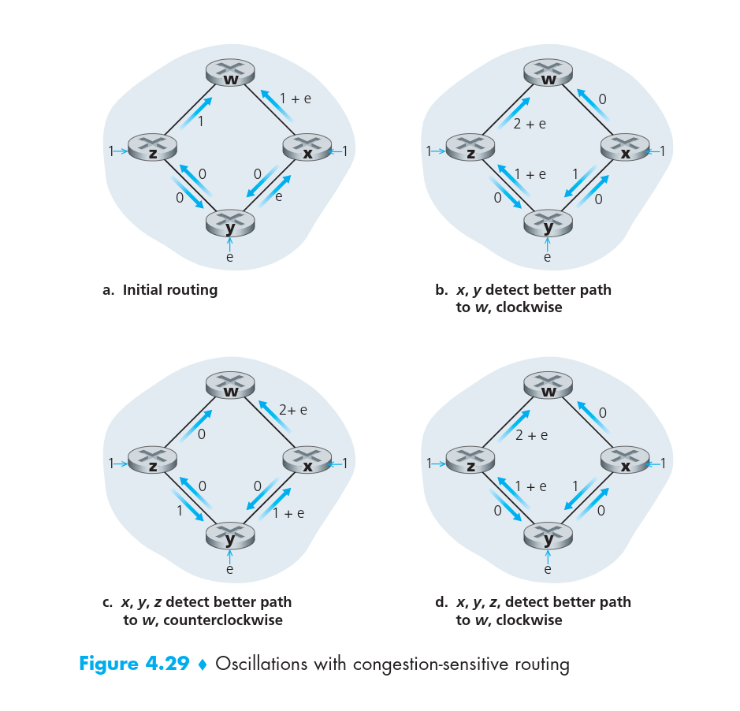
We can see the Oscillation with congestion sensitive routing.
What can be done to prevent such oscillation ?
One solution would be to mandate that link costs not depend on the amount of traffic carried — an unacceptable solution since one goal of routing is to avoid highly congested links, Another solution is to ensure that not all routers run the LS algorithm at the same time.
4.5.2 The Distance-Vector (DV) Routing Algorithm
Whereas the LS algorithm is an algorithm using global information , the distance-vector algorithm is iterative , asynchronous , and distributed.
It is distributed in that each node receive some information from its directly attached neighbors , perform a calculation and distributed the result of its calculation back to its neighbors.
It is iterative in that , this process continue on until no more information is exchanged between the neighbors.
It is asynchronous in that is does not require all of the nodes to operate in lockstep with each other.
The Distance-Vector Routing Algorithm also known as Bellman-Ford Algorithm
For get the least-cost paths , we need to using the celebrated Bellman-Ford equations:
$d_{v}(y)$ is distance from $v$ to $y$
Where the $min{v}$ in the equation is taken over all of x’s neighbors.After traveling from x to v , if we then take the least-cost path from v to y , the path cost will be $c(x,y)+d{v}(y)$ . Since we must begin by traveling to some neighbor $v$ , the least cost from $x$ to $y$ is the minimum of $c(x,y)+d_{v}(y)$ taken over all neighbor $v$.
Distance-Vector (DV) Algorithm:
at each node ,x:
Initialization :
for all destinations $y$ in $N$ :
$D{x}(y)$ = $c(x,y)$ /* if y is not a neighbor then $c(x,y)$ = $\infty$ */
for each neighbor $w$
$D{w}(y)$ = $?$ /* for all destinations $y$ in $N$ */
for each neighbor $w$
send distance vector $D{x} = [ D{x}(y) : y$ in $N ]$ to $w$
Loop
wait (until i see a link cost change to some neighbor $w$
or until i receive a distance vector from some neighbor $w$)
for each $y$ in $N$ :
$D{x}(y)$ = $min{v} {c(x,y) + D{v}(y)}$
if $D{x}(y)$ changed for any destination $y$
send the distance vector $D{x}$ = $[D{x}(y) : y$ in $N]$ to all neighbors
Forever
A simple three node illustrates the operation of DV algorithm
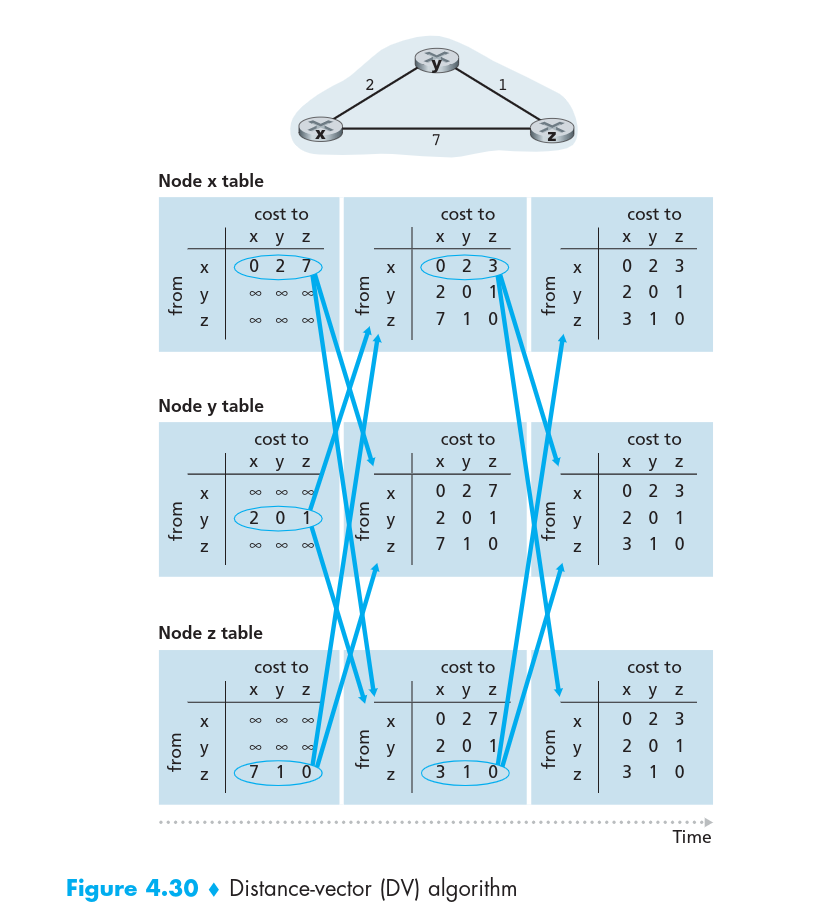
Distance-Vector Algorithm : Link-Cost Changes and Link failure
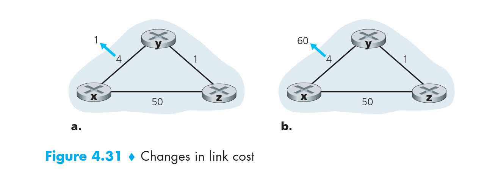
Figure (a) above illustrates a scenario where link cost from y to x distance vector change from 4 to 1. We force here only on y’ and z’ distance table entires to destination x. The Dv algorithm causes the following sequence of events to occur :
- At time $t_{0}$ , $y$ detects the link-cost change (the cost has change from 4 to 1 ) updates its distance vector and inform the neighbors of this change since its distance has changed.
- At time $t_{1}$ , $z$ receives the update from $y$ and update its table . It computer a new least cost of $x$ (it has decreased from a cost of 5 to cost of 2 ) and send its new distance vector to its neighbors.
- At time $t_{2}$ , $y$ receive $z’s$ update and updates its distance table . $y’s$ least cost do not change hence $y$ does not send any message to $z$. The algorithm come to a quiescent state.
Thus only two iterations are requited for the DV algorithm to reach a quiescent state.
Let now consider what happen when a link cost increases , support that support the link cost between $x$ and $y$ increases from 4 to 60 as shown in figure (b) above.
- Before the link cost changes , $D{x}(y) = 4$ , $D{y}(z) =1$ , $D{z}(y) = 1$ and $D{z}(x) = 5$ , $y$ detect the link cost change (the cost change from 4 to 60) , $y$ computes its new minimum-cost path to x have a cost of of course , with out global view of the network , we can see that this new cost via $z$ is wrong . But the only information node $y$ has is that its direct cost to $x$ is 60 and that $z$ has last told $y$ that $z$ could get $x$ with a cost of 5 . So in order to get to $x$, $y$ would now route through $z$ , fully expecting that $z$ will be able to get to $x$ with cost of 5.
- Since node $y$ has computed a new minimum cost to $x$ , it inform $z$ of new distance vector at time $t_{1}$.
- Sometime after $t_{1}$ , $z$ receive the $y’s$ new distance vector ,which indicates that $y’s$ minimum cost to $x$ is 6 . $z$ know get to $y$ with a cost of 1 and computes a new least cost to x of Since $z’s$ least-cost to $x$ is increased , and then it inform $y$ of its new distance vector at $t{2}$ at $t{2}$.
- In a similar manner , after receiving $z’s$ a new distance vector , $y$ determines $D{y}(x)=8$ and send $z$ its distance vector . $z$ then determine $D{z}(x) = 9$ and sends $y$ its new distance vector over and over again until $D{z}(x)= min{C{z}(y)+D{y}(x) , C{z}(x)+D_{x}(x)}= min{50+1 ,50+0 }=50$ , at this point , $z$ finally ! determine that its lease-cost path to $x$ is via its direct connection to $x$.
What way could solve the problem noted above ?
The answer is Poisoned Reverse.
Distance-Vector Algorithm : Adding Poisoned Reverse
The specific looping scenario just described can be avoided using a technique known as poisoned reverse. The idea is simple if $z$ routers through $y$ to get to destination $x$ , then $z$ will advertise to $y$ that its distance to $x$ is infinity, $z$ will advertise to $y$ that $D{z}(x) = \infty$ ( even though $z$ known $D{x}(z) = 5$ in truth) $z$ will continue telling this little white lie to $y$ as long as it route $x$ via $y$ . Since $y$ believes that $z$ had no path to $x$ ,$y$ will never attempt to route to $x$ via $z$ , as long as $z$ continues to route to $x$ via $y$
Let now see how Poisoned Reverse solved the particular looping problem : When the link-cost $(x,y)$ change from 4 to 60 , $y’s$ distance table indicate $D_{z}(x) = \infty$ .
- At the time $t{0}$ ,$y$ update its table and continues to route directly to $x$ , albeit at the higher cost of 60 and then inform $z$ of the new distance vector to $x$ , that is $D{y}(x) =60$ .
- After receiving the update at $t{1}$ , $z$ immediately shits the its route to $x$ to be via the direct $(z,x)$ link at the cost of 50, and then $z$ inform $y$ of new cost of $D{z}(x) = 50$ .
- After receiving the update from $z$ , $y$ update its distance table at $D{y}(x)=51$, also , since $z$ is now on $y$’s lease-cost path to $x$ , $y$ poisoned the reverse from $z$ to $x$ by informing $z$ at time $t{3}$ that $D{y}(x) = \infty$ (even though $y$ know $D{y}(x)=51$ in trush)
Does poisoned reverse solve the general count-to-infinity problem ? It dose not , when looping involving three or more nodes will not be detected by poisoned reverse.
A comparison of LS and DV Algorithm
Message complexity : In LS algorithm requires each node know all cost of link in the network . The require O(|E|*|N|) to be sent. Also , whenever a link cost changes , the new link cost must be sent to all node in the internet. In the DV algorithm The node only need to exchange the information between directly connection neighbors. When a link cost change , the DV algorithm will propagate the results of the changed link cost only if the new cost results in a changed lease-cost path for one of nodes attached to that link.
Speed of convergence : LS is O($|N|^2$) algorithm require O(|N||E|) messages to be sent. DV algorithm can converge slowly and can have routing loops while the algorithm is converging . DV algorithm also suffers from the count-to-infinity problem.
Robustness: What can happen if route fails misbehaves or is sabotage? Because LS algorithm only compute own forwarding table of each node in the network , This mean route calculation are somewhat separated under LS . Providing a degree of robustness. Under DV algorithm , a node must advertise incorrect least-cost path to any all destination , so that a malfunctioning router may be cause other router flood the malfunctioning router with traffic and cause a large portions of the internet to become disconnected for up to several hours.
4.5.3 Hierarchical Routing
In our study of LS and DV algorithm , In practice , this model and its view of homogeneous set of routers all executing the same routing algorithm is a bit simplistic for at least two important reasons:
Scale :Because , today’s public internet consist of hundreds of millions hosts , LS algorithm updates among all of the router in public internet world would leave no bandwidth left for sending data packets, and under DV algorithm that iterated among such a large number of routers would surely never converge.
Administrative autonomy: The corporation / organization / individual want to run and administer its network as it wishes.
Both of these problems can be solve by organizing routers into autonomous systems (ASs)
Each AS consisting of a group of routers that are typically under the same administrative control ( eg : operated by the same ISP or belonging to the same company network).
The routing algorithm running within a autonomous system is called an Intra-autonomous-system routing protocol
One or more router in the AS being responsible for forwarding packets to destinations outside other AS : there routers are called gateway router, Obtaining reachability information from neighboring AS and propagating the reachability information to all router internal to AS are handled by the inter-AS-routing-protocol
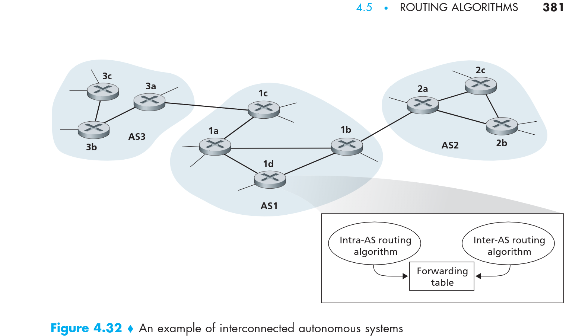
If a destination router of outside AS can be reached by more than one gateway router , the router inside AS can using Hot-Potato-Algorithm to choose which gateway router should be select. The hot-potato-algorithm is using information from Intra-AS-Routing-Protocol to choose the lease-cost path of gateway routers.
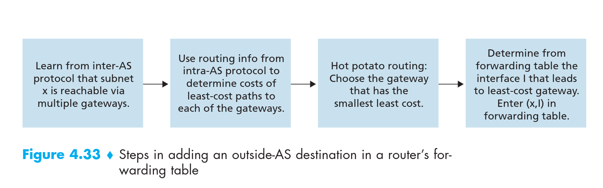
4.6 Routing in the internet
4.6.1 Intra-AS Routing in the Internet : RIP
RIP is a distance-vector algorithm that operates in a manner very close to idealized DV protocol . Each router maintains a RIP table is known as a routing table. RIP is implemented as an application-layer process can send and receive the (require/response) message over a standard socket (port 520) and using UDP protocol.
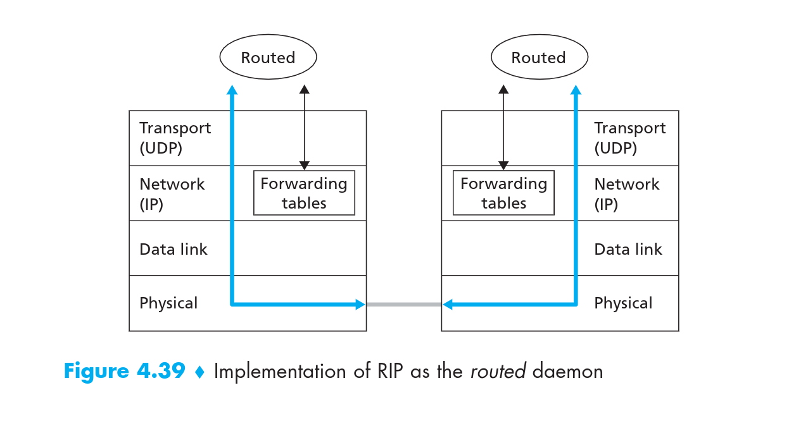
In RIP , routing updates are exchanged between neighbors approximately every 30 seconds using a RIP response message(RIP response message also known as RIP advertisements) . If a router does not hear from its neighbor at least once every 180 seconds , that neighbor is considered to be no longer reachable ; that is , either neighbor is died or the connecting link has gone down , when this happen , RIP modifies the local routing table and then propagates this information by sending advertisement to still alive neighbors.
Let us see a simple example:
Dotted lines indicate that still has other AS connect on ; thus this autonomous systems have many more routers and link than figure shown follow.
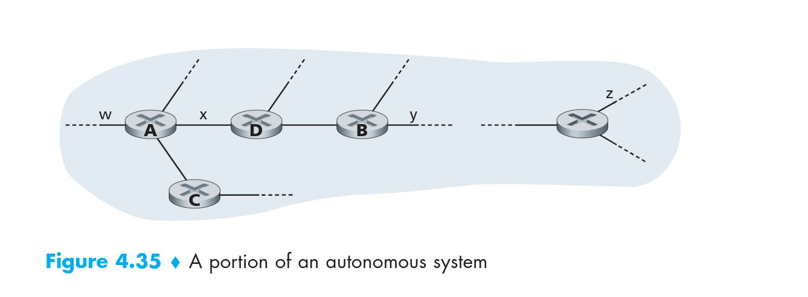
Routing table of Router-D before receiving advertisement from Router-A:
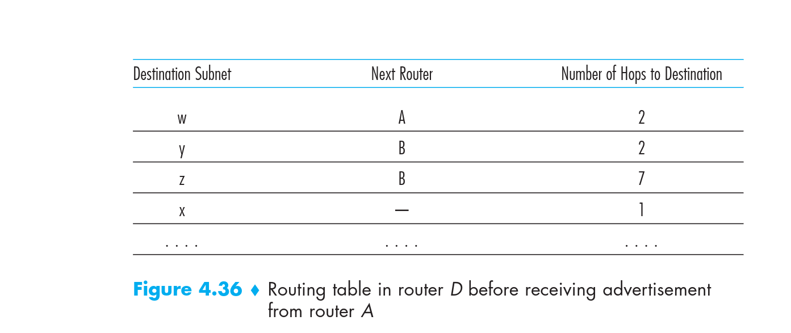
Advertisement from router A:
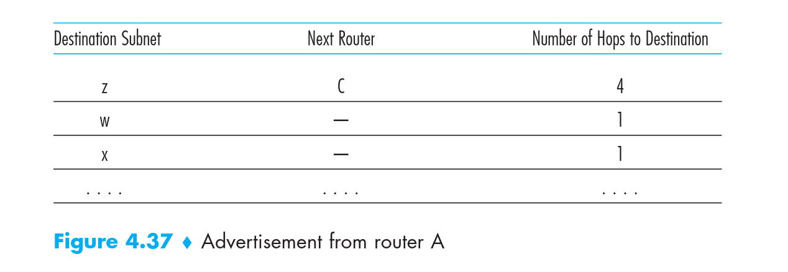
Routing table of Router-D after receiving advertisement from Router-A:
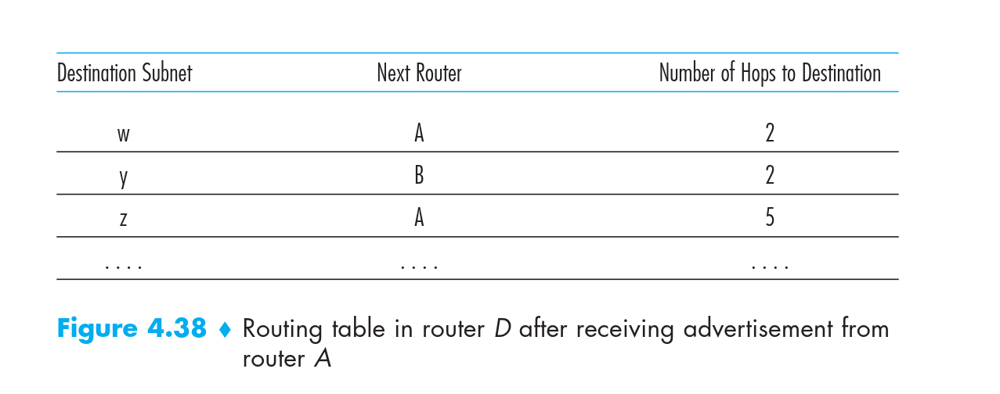
4.6.2 Intra-AS Routing in the Internet : OSPF
OSPF is a link-state algorithm that uses flooding of link-state information and dijkstra least-cost path algorithm . With OSPF protocol , a router constructs a complete topological map of the entire autonomous system , The router then locally run dijkstra algorithm to determine the shortest-path tree to all subnet. Individual link cost can be configured by the network administrator .
Under OSPF protocol , A router broadcast link-state information whenever there is change in a link’s state , It also broadcast information periodically (at least once every 30 minutes) even if the link’s state has not changed. OSPF protocol advertisements are contains in OSPF message that carried directly by IP protocol , with a upper-layer protocol 89 for OSPF.
The OSPF protocol also checks that link are operational and allows an OPSF router to obtain a neighboring router’s database of network-wide link state.
OPSF is conceived as the successor to RIP and as has a number of advanced feature. The advanced feature is include the following:
Security: Exchanged between OPSF router can be authenticated , with authentication ,only trusted router can participate in OPSF protocol within an AS. Two type of authentication is can be configured — simple and MD5( discuss in chapter 8).
Multiple same-cost path: OPSF allow multiple same-cost path to be used , don’t need to select a path to carry all traffic.
Integrated support to unicast and multicast routing: Multicast OSPF (MOSPF).
- Support a hierarchy within a single routing domain: An OPSF autonomous system can be configured hierarchically into areas , Each area run its own OSPF link-state-algorithm , with each router in an area broadcasting its link-state to all other in that area. Within each area of a autonomous system has one or more area border router are responsible for routing packets to outside the area . And exactly one OPSF area in the AS is configured to be the backbone area. The primary role of the backbone area is to route traffic between the other area in the AS. Inter-area routing within the AS requires that the packet be first route to a area border router , and routed through the backbone to the area border router that is in the destination area , and then routed to the final destination.
4.6.3 Inter-AS Routing : BGP (Border Gateway Protocol)
Let’s us examine how path are determined for source-destination pair span multiple ASs.
Under BGP protocol , pair of router exchange information through semi-permanent TCP connection using port 179.
The BGP protocol TCP connection has two type of connection :
- BGP TCP connection between router within a same AS.
- BGP TCP connection between routers in two different ASs.
Two interconnecting router corresponding source and destination router that using TCP are called BGP peers . The TCP connection along with all BGP message sent over the connection is called BGP session.
Two type of BGP session:
- External BGP session (eBGP session) : The BGP message is sent span two routers.
- Internal BGP session (iBGP session) : The BGP message is sent within an AS.
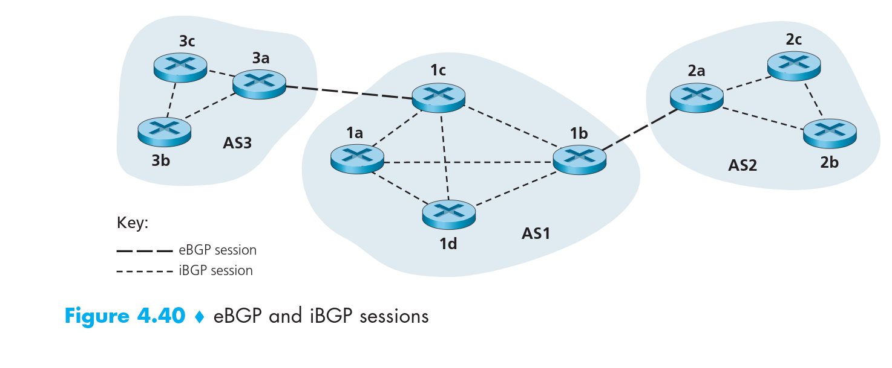
In the BGP , destinations are not a host but instead are CIDRized prefixes with each prefixes is representing a subnet or a collection of subnet.
In the BGP , some ASs has a globally unique autonomous system numbers(ASN) , the ASs hasn’t ASN is called stub AS. ASN similar to IP address are assigned by ICANN regional register.
When a router advertise prefix to outside ASs , it include with a number of BGP attributes : , in BGP jargon , a prefix along with its attributes is called a route. The BGP attributes is following:
- AS-PATH : The attributes contain the ASN that the prefix have been passed.
- NEXT-HOP: The NEXT-HOP is router interface that begins the AS-PATH.
BGP Route selection
Under BGP protocol , a router may be receive more than one route to the same prefix . Then BGP must be sequentially invokes the following elimination rules until one possible remain , The elimination rules is following:
- Routes are assigned a local preference values as one of their attributes , the routes with the highest local preference value are selected.
- From the remaining routes ( all routes has same preference value ) with the shortest AS-PATH are selected.
- From the remaining routes ( all routes has same preference value and same AS-PATH length) with closest NEXT-HOP are selected, here closest mean the least-cost path of a router itself interface and its corresponding eBGP session interface.
- If more than one route still remains , the router use the BGP identifiers to select the route.
Putting all together : How does an entry get into a router’s forwarding table ?
How does the packet is forwarded within a router ?
When a packet arrive to the router , the packet’s destination IP address compared with the prefixes in the forwarding table and find a longest prefix match . Then the packet is forwarded to router’s port that associated with that matched prefix.
How does an entry get into a router’s forwarding table ?
In order to get an entry into a router’s forwarding table , first , the router must be aware of the prefix. The router become aware of the prefix via a BGP route advertisement , such a route advertisement may be sent over a eBGP session or over a iBGP session. After the router become aware of prefix , it need to determine appropriate output port to which datagram destined to that prefix will be forwarded. Before it can enter that entry (prefix + port) into its forwarding table . If router receive more than one route advertisement for this prefix , it is uses the BGP selection process to select to best route for the prefix , suppose the route have been selected , the selected route include NEXT-HOP attribute , which is IP address of first router outside the router’s AS along this best route. Then the router uses its Intra-AS routing protocol (typically OSPF) , to determine the shortest path to the NEXT-HOP router. The router finally determines the port number to associate with the prefix by identifying the first link along the shortest path . The router finally can enter the prefix-port pair into the forwarding table.
4.7 Broadcast and Multicast Routing
4.7.1 Broadcast Routing Algorithm
Two type of Broadcast routing algorithm:
- Source-Duplication: A packet is created and duplicated by a source router , and source router broadcast to all router in the network by unicast. This approach has several drawback is following:
- inefficiency : The source router is required to copy a large amount of same packet and send these via a single link.
- Additional protocol mechanisms to obtain the address of the broadcast recipient ,would add more overhead and make the system more complex .
- In-network duplication: The source router broadcast by sending only one packet to attached routers , and then the attached routers copy the packet and send it to next attached routers .
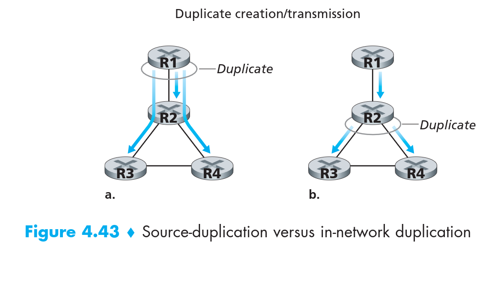
Uncontrolled Flooding
The most obvious technique for broadcast is Flooding approach in which the source node send its copy of packet to its neighbor.
Although this approach is simple and elegant , it has a fatal flaw , that is , if the graph has a cycles , then one or more broadcast packet will cycle indefinitely .
This broadcast storm along with broadcast packet increasingly would cause the network crash (network useless).
Controlled Flooding
In practice , we have several way to solve the problem of uncontrolled flooding .
Sequence-number-controlled-flooding: A source node put its address or other unique identifies as well as broadcast sequence number into broadcast packet , then send it to all neighbors. Each node maintain a list of the source address and sequence number of broadcast packet , it first checks whether the packet is in this list , if so , the packet is dropped , if not , the packet is duplicated and forwarded to all node’s neighbors.
Reverse path forwarding (RPF): Reverse path forwarding is also known as Reverse path broadcast (RPB) , When a node receives a broadcast packet with the source node address , the node transmits the packet on all of its outgoing link (expect one that outgoing link of its receive that packet)only if the packet arrived on the link that is on its own shortest unicast path back to the source. Otherwise , this packet is discarded simply.
As likely the figure following , the router E transmits only the packet that arrived from router C to all neighbors(because it is the shortest path from router D to source router A), Otherwise , the packet is discarded simply.
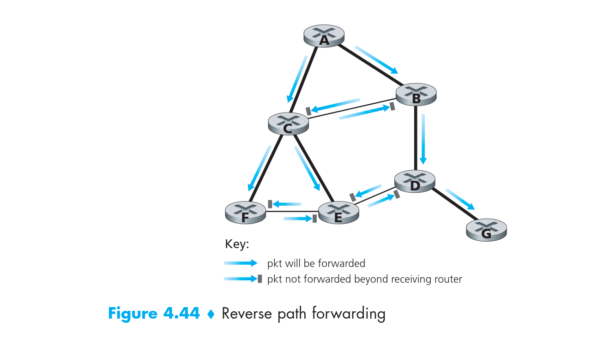
Spanning-Tree Broadcast
Although The sequence-number-controlled-flooding algorithm and RPF algorithm avoid the broadcast storm , these don’t completely avoid the transmission of redundant broadcast packet.
Actually , every node receive only one broadcast packet is enough. The Spanning-Tree Broadcast algorithm can solve this problem .
Thus , a node first have to construct a spanning-tree , when it wants to provide broadcast for all network node.
We consider only one simple algorithm here , that is Center-based approach to build a spanning-tree.
- First determine a center node (also known as core and rendezvous point)
- The network node then unicast tree-join message addressed to center node. A tree-join message is forwarded using unicast routing toward the center until either arrives at a node that has already belong to the spanning tree or arrives at the center node.
If each link associated cost , then a spanning-tree whose cost is the minimum of all of graph’s spanning-tree is called a minimum spanning-tree .
4.7.2 Multicast
In multicast communication , we are immediately faced with two problem .
- How to identify the receiver of multicast packet.
- How to address a packet send to these receivers.
Network layer multicast in the internet consist of two complementary components : IGMP (Internet Group Management Protocol) and Multicast routing protocol. The IGMP is used to solve first problem. The Multicast routing protocol is used to solve second problem.
Internet Group Management Protocol
The IGMP protocol version 3 operates between a host and its directly attached router. The figure following , shows three fist-hop multicast protocol each connected to its attached hosts via one outgoing local interface.
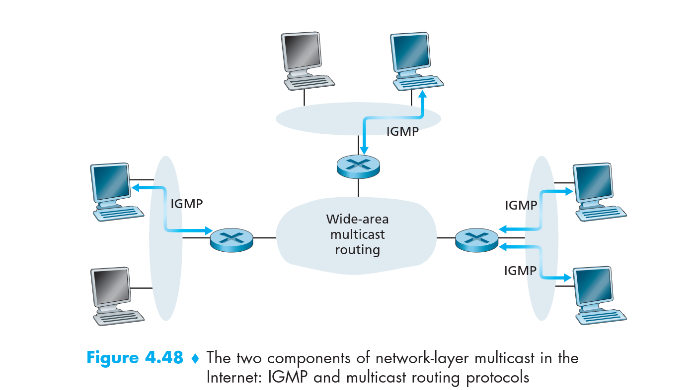
IGMP provide the mean for a host to inform its attached router that an application running on the host want to join a specific multicast group.
IGMP has three message types.
- Membership_query message: That is sent by router to all host on an attached interface to determine which hosts on attached network are member of which multicast group.
- Membership_report message : This message is used to respond to Membership_query message for inform the attached router that it still in multicast group and also be used to first joins a multicast group.
- Leave_group message : This message is used to inform the router stops forwarding the multicast message to it. Interesting this message is optional , but it is optional , how to detect when a host leave the multicast group , The answer is the router infer this host have been leaved a multicast if this host no longer respond to Membership_query message. This example is called soft state in the internet protocol.
Multicast Routing Algorithm
The goal of multicast routing , then is find a tree of links that connects all of routers that have attached hosts belonging to the multicast group . Multicast packet will be routed along with this tree from the multicast sender to all of the host belong to this multicast tree , of course , the tree also can contain some router that haven’t hosts belong to Multicast group.
Two approach have been adopted for determining the multicast router tree.
- A group shared tree : As in the case of Spanning-tree broadcast , multicast routing over a group-shared tree is base on building a tree that include all edge router with attached host belonging to multicast group. In practice , a center-based approach is used to construct the multicast routing tree with edge router with attached hosts belonging to multicast group send (via unicast) join-message addressed to center router.
- A source base tree : The group shared tree constructs a single, shared routing tree to route packet from all senders . This approach is constructs a multicast routing tree for each source in the multicast group . In practice , an RPF algorithm is used to construct a multicast forwarding tree for multicast datagram originating at source x. The RPF broadcast algorithm require a bits of tweaking when it is used to multicast. To see why consider router D in Figure following. Under broadcast RPF , it forward packets to router G , even though router has no attached hosts that are joined to multicast group . While this is not so bad for this case , where router D has only one downstream router G , imagine what would happen if router D has thousand of downstream router ? Each of these downstream router would receive unwanted multicast packets. The solution of this problem is known as pruning.
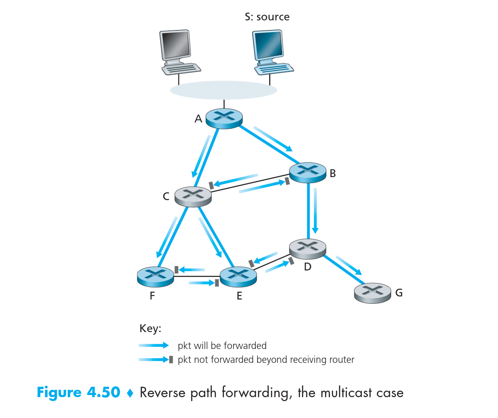
计算机网络 Computer Network A Top-Down Approach Computer Network A Top-Down Approach 计算机网络
本博客所有文章除特别声明外，均采用 CC BY-SA 3.0协议 。转载请注明出处！